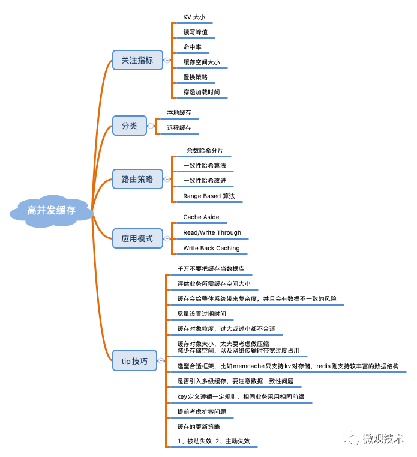
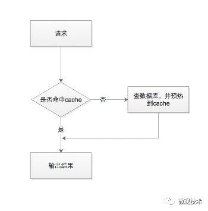
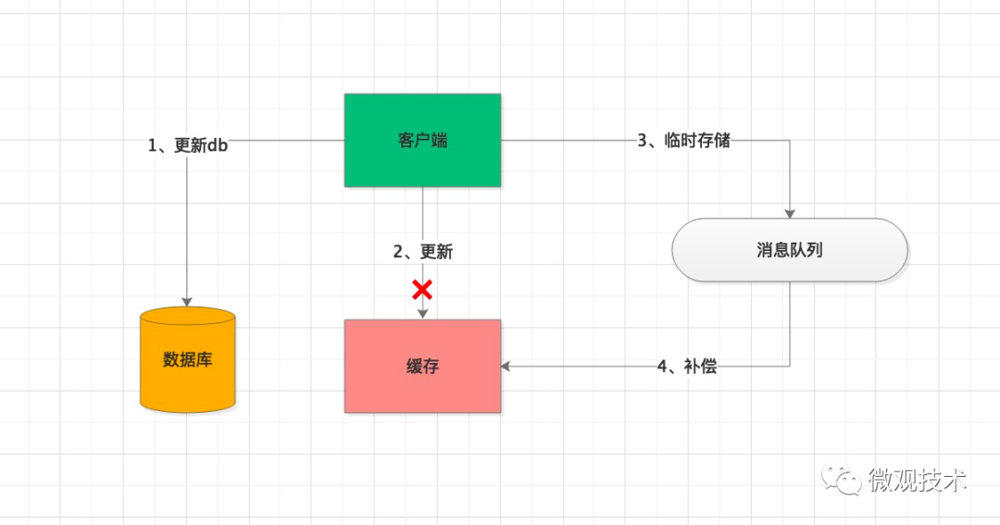
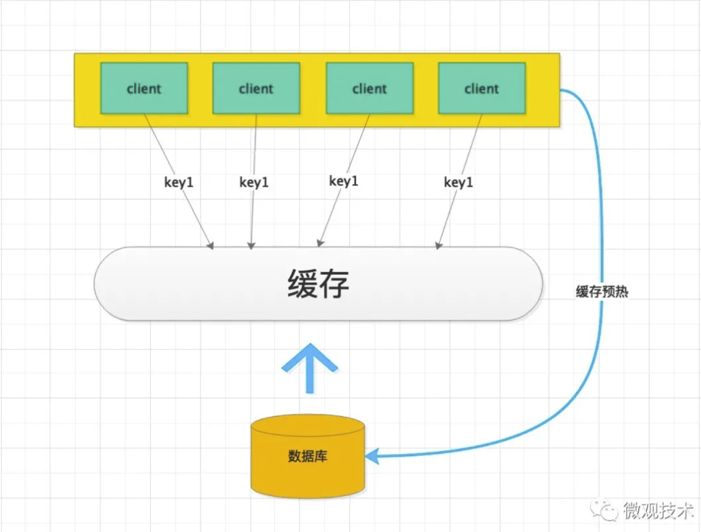
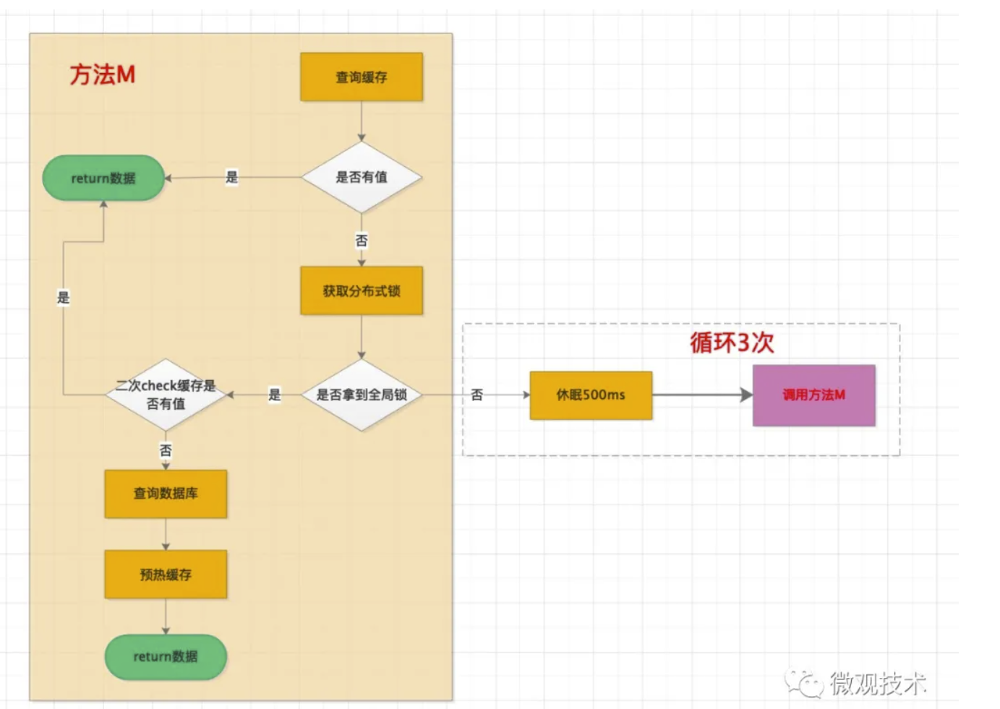

亿级系统的Redis缓存如何设计？？？
以下文章来源于微观技术 ，作者TomGE
缓存设计可谓老生常谈了，早些时候都是采用memcache，现在大家更多倾向使用redis，除了知晓常用的数据存储类型，结合业务场景有针对性选择，好像其他也没有什么大的难点。
工程中引入Redis Client二方包，初始化一个Bean实例RedisTemplate ，一切搞定，so easy。
如果是几十、几百并发的业务场景，缓存设计可能并不需要考虑那么多，但如果是亿级的系统呢？
首先，先了解缓存知识图谱
早期的缓存用于加速CPU数据交换的RAM。随着互联网的快速发展，缓存的应用更加宽泛，用于数据高速交换的存储介质都称之为缓存。
使用缓存时，我们要关注哪些指标？缓存有哪些应用模式？以及缓存设计时有哪些Tip技巧？一图胜千言，如下：

七大经典问题
缓存在使用过程不可避免会遇到一些问题，对于高频的问题我们大概归为了7类。具体内容下面我们一一道来
1、缓存集中失效
当业务系统查询数据时，首先会查询缓存，如果缓存中数据不存在，然后查询DB再将数据预热到Cache中，并返回。缓存的性能比 DB 高 50~100 倍以上。

很多业务场景，如：秒杀商品、微博热搜排行、或者一些活动数据，都是通过跑任务方式，将DB数据批量、集中预热到缓存中，缓存数据有着近乎相同的过期时间。
当过这批数据过期时，会一起过期，此时，对这批数据的所有请求，都会出现缓存失效，从而将压力转嫁到DB，DB的请求量激增，压力变大，响应开始变慢。
那么有没有解呢？
当然有了。
我们可以从缓存的过期时间入口，将原来的固定过期时间，调整为过期时间=基础时间+随机时间，让缓存慢慢过期，避免瞬间全部过期，对DB产生过大压力。
2、缓存穿透
不是所有的请求都能查到数据，不论是从缓存中还是DB中。
假如黑客攻击了一个论坛，用了一堆肉鸡访问一个不存的帖子id。按照常规思路，每次都会先查缓存，缓存中没有，接着又查DB，同样也没有，此时不会预热到Cache中，导致每次查询，都会cache miss。
由于DB的吞吐性能较差，会严重影响系统的性能，甚至影响正常用户的访问。
解决方案：
- 方案一：查存DB 时，如果数据不存在，预热一个
特殊空值到缓存中。这样，后续查询都会命中缓存，但是要对特殊值，解析处理。 - 方案二：构造一个
BloomFilter过滤器，初始化全量数据，当接到请求时，在BloomFilter中判断这个key是否存在，如果不存在，直接返回即可，无需再查询缓存和DB
3、缓存雪崩
缓存雪崩是指部分缓存节点不可用，进而导致整个缓存体系甚至服务系统不可用的情况。
分布式缓存设计一般选择一致性Hash，当有部分节点异常时，采用 rehash 策略，即把异常节点请求平均分散到其他缓存节点。但是，当较大的流量洪峰到来时，如果大流量 key 比较集中，正好在某 1～2 个缓存节点，很容易将这些缓存节点的内存、网卡过载，缓存节点异常 Crash，然后这些异常节点下线，这些大流量 key 请求又被 rehash 到其他缓存节点，进而导致其他缓存节点也被过载 Crash，缓存异常持续扩散，最终导致整个缓存体系异常，无法对外提供服务。
解决方案：
- 方案一：增加实时监控，及时预警。通过机器替换、各种故障自动转移策略，快速恢复缓存对外的服务能力
- 方案二：缓存增加多个副本，当缓存异常时，再读取其他缓存副本。为了保证副本的可用性，尽量将多个缓存副本部署在不同机架上，降低风险。
4、缓存热点
对于突发事件，大量用户同时去访问热点信息，这个突发热点信息所在的缓存节点就很容易出现过载和卡顿现象，甚至 Crash，我们称之为缓存热点。
这个在新浪微博经常遇到，某大V明星出轨、结婚、离婚，瞬间引发数百千万的吃瓜群众围观，访问同一个key，流量集中打在一个缓存节点机器，很容易打爆网卡、带宽、CPU的上限，最终导致缓存不可用。
解决方案：
- 首先能先找到这个
热key来，比如通过Spark实时流分析，及时发现新的热点key。 - 将集中化流量打散，避免一个缓存节点过载。由于只有一个key，我们可以在key的后面拼上
有序编号，比如key#01、key#02。。。key#10多个副本，这些加工后的key位于多个缓存节点上。 - 每次请求时，客户端随机访问一个即可
可以设计一个缓存服务治理管理后台，实时监控缓存的SLA，并打通分布式配置中心，对于一些
hot key可以快速、动态扩容。
5、缓存大Key
当访问缓存时，如果key对应的value过大，读写、加载很容易超时，容易引发网络拥堵。另外缓存的字段较多时，每个字段的变更都会引发缓存数据的变更，频繁的读写，导致慢查询。如果大key过期被缓存淘汰失效，预热数据要花费较多的时间，也会导致慢查询。
所以我们在设计缓存的时候，要注意缓存的粒度，既不能过大，如果过大很容易导致网络拥堵；也不能过小，如果太小，查询频率会很高，每次请求都要查询多次。
解决方案：
- 方案一：设置一个阈值，当value的长度超过阈值时，对内容启动压缩，降低kv的大小
- 方案二：评估
大key所占的比例，由于很多框架采用池化技术，如：Memcache，可以预先分配大对象空间。真正业务请求时，直接拿来即用。 - 方案三：颗粒划分，将大key拆分为多个小key，独立维护，成本会降低不少
- 方案四：大key要设置合理的过期时间，尽量不淘汰那些大key
6、缓存数据一致性
缓存是用来加速的，一般不会持久化储存。所以，一份数据通常会存在DB和缓存中，由此会带来一个问题，如何保证这两者的数据一致性。另外，缓存热点问题会引入多个副本备份，也可能会发生不一致现象。

解决方案：
- 方案一：当缓存更新失败后，进行重试，如果重试失败，将失败的key写入MQ消息队列，通过异步任务补偿缓存，保证数据的一致性。
- 方案二：设置一个较短的过期时间，通过自修复的方式，在缓存过期后，缓存重新加载最新的数据
7、数据并发竞争预热
互联网系统典型的特点就是流量大，一旦缓存中的数据过期、或因某些原因被删除等，导致缓存中的数据为空，大量的并发线程请求（查询同一个key）就会一起并发查询数据库，数据库的压力陡然增加。

如果请求量非常大，全部压在数据库，可能把数据库压垮，进而导致整个系统的服务不可用。
解决方案：
- 方案一：引入一把
全局锁，当缓存未命中时，先尝试获取全局锁，如果拿到锁，才有资格去查询DB，并将数据预热到缓存中。虽然，client端发起的请求非常多，但是由于拿不到锁，只能处于等待状态，当缓存中的数据预热成功后，再从缓存中获取

为了便于理解，简单画了个流程图。这里面特别注意一个点，由于有一个并发时间差，所以会有一个二次check缓存是否有值的校验，防止缓存预热重复覆盖。
- 方案二：缓存数据创建多个备份，当一个过期失效后，可以访问其他备份。
写在最后
缓存设计时，有很多技巧，优化手段也是千变万化，但是我们要抓住核心要素。那就是，让访问尽量命中缓存，同时保持数据的一致性。